シルバーセカンド開発日誌
■
2020-01-11 (土) 片道勇者2【44】 施設マーカー▼
今回実装したのは施設マーカー！
建物やイベントポイントなどが一定距離内にあると
矢印で方向を示してくれる機能です。
一定距離内に建物があると、建物がある方向にマーカーが「ポッ」とポップします
『片道勇者1』のミニマップは常時じっくり見ないといけないのと、
画面を占有する都合から、
『片道勇者2』での基本機能としては一旦この
「施設マーカー式」にしてみることにしました。
（実装できそうならミニマップを見られる「特徴」なども搭載するかもしれませんし、
やっぱりミニマップを基本搭載する可能性もあります）
実際にマーカーを使ってみると、途中の細かい地形は分からなくなりましたが
建物が近くなるたびに教えてくれるので施設の見逃しはほとんどなくなりました。
というより、どっちかというと
「前作では本当に何の意図もなく建物を置いていたなあ」
ということを再認識させられる結果となりました。
『片道勇者開発記』などにも書いていますが、前作はほとんどの状況で
「施設があるらしき場所をひたすら辿っていく」だけのプレイになりがちで、
「上か下、どちらへ行こうかを悩む場面」というのはほとんどなかったはずです。
プレイ中の選択肢って「最低2択」あれば十分ゲームになるんですけれども、
従来の施設配置みたいに「1択」が続いているだけだとそんなに面白くありません。
今作も無思考で作っていくとそんな感じになりそうなので、
今回はもう少し、行き先を選んだり迷ったりする楽しみが生まれるような
イベントポイントや施設の置き方を考えてみたいと考えています。
ここも試行錯誤がいりそうです。■
2019-12-14 (土) 片道勇者2【43】 夜システム▼
夜システムを搭載！ のついでに動画を撮影してみました。
今回は「夜で視界制限される時間帯」を
1日の内の1/2から「1/3（24時間中の8時間）」だけにして、
代わりに視界制限を厳しめにしています。
初期状態だと見える範囲は2ヘクスだけですが、視界外の敵であっても
昼間と同じ範囲で気配に気付いてプレイヤーの移動が停止するので、
急に敵にぶつかることはありません。安心！
ただし暗闇に何が潜んでいるかは分かりませんので、
初接触時の敵の種類だけ不確定になる感じです。
「何かはいるけど、何がいるのかは分からない。
もしかしたら相手が本当はただの『野犬』なのに
恐がって避けているかもしれない」
今回はそんな「夜」感を出していきます。
暗所の視界は「装備」や「特徴」で広げることが可能です。
夜だけ攻撃力が強くなる「特徴」や「スキル」などがあっても面白いかもしれませんし、
「夜は経験値が多めに入る」だとかお得な要素も入るとうれしいかもしれません。
【追記 敵を探知した場所が分かるように】
あと動画を見てもらったら、
「夜間は敵を探知した場所に一時的にマーカーが出ると分かりやすいかも」と
言われたので、動画のアップロード後に実装してみました。
敵を探知した位置に光が出て位置が分かります。1ターン経つと消えます
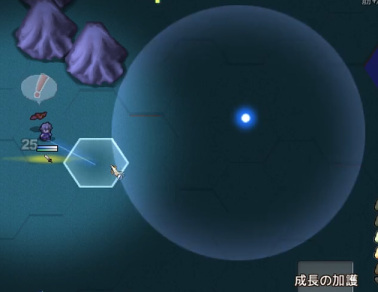■
2019-11-30 (土) 片道勇者2【42】 細かい修正と残り▼
パーティーシステムなど大きな修正を入れると
だいたいバグがいっぱい出てきますので
内部処理の修正にほとんどの時間を費やした二週間でした。
見た目に変化がないし、期待通りに動くようにしていただけなので何もお見せできない！
今回の中で目に見える変更といえば以下くらいです。
＜敵のHPゲージを「弧状」に変更！＞
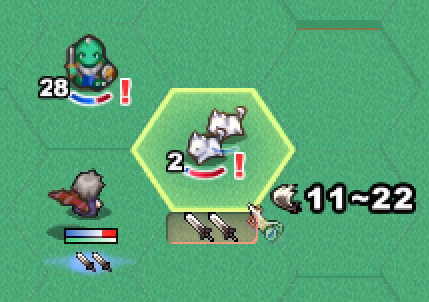
敵のHPゲージを「弧状」に変更しました。
ファイアーエムブレムの最新作などでも採用されている方式なのですが、
真横のバーより敵の見た目の邪魔にならないのがいいですね。
ウディタでの実装だと、ゲージの減り具合が違う画像を10パターンくらい作って
絵ごと切り替えるようにして作っています。実は『片道勇者1』の敵ゲージもそうでした。
ゲージが小さければ10％ごとの区切りでもそんなに困らない感じです。
【アルファ2に向けての残り作業】
ここからのアルファ2に向けての実装項目は以下の通りです。
たいていはこれら実装作業そのものとは別に、
バグ修正や微調整によって不明の追加時間がかかります。
●【システム】ショップ機能を抜本的に修正。
売却は手持ち全部からまとめて行えるようにする。
（アルファ1ではドラ○もんのポケットみたいに買い物中に「引き直し」して
手札に売りたいアイテムが来るまで回すマニアックすぎる仕組みでした）
●【システム】視界制限機能（夜間に視界外のNPCを見えなくさせる機能）
●【システム】昼夜の切り替え機能。
●【システム】施設の位置を遠くからマーカーで教えてくれる機能。
●【システム】アドバイス機能を仲間コメント機能で出すよう全面的に変更。
（アドバイスが出るタイミングで仲間ボタンからピコッと吹き出しが出て、
その後に仲間に話すとアドバイスを教えてくれる）
●【データ】アルファ1で絵がなかったカードに絵を付ける。
●【データ】アイテムや特徴を少し増やしたい。
●【データ】敵の出現度合いや強さを距離によって変えてよりゲームらしさを増す。
●【キャラクター】ラフのままの妖精クリスをどうにかする。
●【通信】Twitter通信機能でエンド画面を3枚送信できるようにする。
→ 要望が多かった、「死に際の画面」「所持カード一覧と能力値」
「評価画面」の3枚を一斉にTwitterに送信できるようにします。
仮実装は済んでいます。
●【システム】仮オプションの完成。
●【システム】全体的な視認性の向上。従来で「いつの間にかXXしてた」
という状態になっていた地味な部分をもっと目立たせる。
●【システム】ゲームパッド・キーボードへの仮対応。
これが一体どのくらいかかるか分からないくらい大変そうです。
「移動状態のままカードを選べる」プレイ方式というのが
操作の構築のややこしさを生んでいます。
解法は色々あるでしょうけれども、何通りか試しに作っては壊しながら、
一番マシなのを探していく作業になると思います。
また、各画面モードごとに全部操作を作らないといけないので作業量も相当多い！
一方で、ここは評価に一定量影響しそうな部分だとも考えているので、
仮でもいいので第一版を作って見てもらいたいところです。
●その他、ここに書くのを忘れているであろう要素いろいろ。
という感じです。
この数だとペース的にまずあと一ヶ月で終わらない気がしたので、
うまく目標を区切りつつ最速でぼちぼち作っていきたいと思います。■
2019-11-16 (土) 片道勇者2【41】 パーティー機能▼
今年中にアルファ2にたどり着けるかちょっと怪しいペースになってきました。
時間はほぼ全部お仕事やらなんらかの制作に使ってるんですけどね！
やれるペースでやっていきますが、今年中にα2を出すくらいは努力目標にしたいです。
そのα2時点のものをゲームの基幹部を固めたものとして、
「片道勇者2体験版（動作確認版）」の立ち位置にする予定でいます。
【1マス内パーティーシステム搭載！】
『片道勇者1』には、主人公が1マス内で仲間とパーティーを組んで
戦う機能がありました。
ローグライクゲームで「仲間が別マスにいる」とそれだけで管理コストが増して
不便だった記憶があったので、もっとライトなプレイ感にしようと思って
採用したものです。
これは『片道勇者1』の画像です。仲間が1マス内にいます。
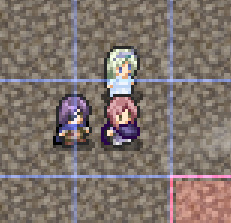
この1マス内パーティーシステムは、
・プレイヤーの向きを変えてダメージを仲間に分散させたり
（後ろを向けば盾にもできる）
・敵に囲まれても1～2発くらいは平気になったり
・主人公が正面から戦うだけで仲間を実質かばうことができたり
・同じマスにいるので位置合わせを気にせずサポートを受けられる
と、直感的で色々楽しみを生むことができる、悪くないアイデアだと思っていました。
（なお後の『片道勇者プラス』では、
別マスにいる仲間として「協力NPC」が登場しますが、
ゲームの特性上、少し油断するとすぐにはぐれてしまいます）
前作では「味方側」しかパーティーを組めませんでしたが、
『片道勇者2』では、味方も敵も住人も同じパーティーシステムが使われます。
どうせ作るなら同じ処理を使い回せる方がいいですからね！
ということで実装したものがこれ！ 処理が複雑で予想外に苦戦しました。
『片道勇者2』の1マス内パーティーシステム、画像では敵側に使っています
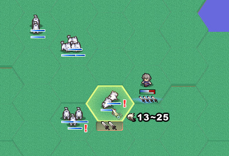
ここでは試しに野犬が1マス内に2～3体で群れて出てくるようにしています。
「敵の数が3倍になったら脅威度も3倍だろー」と思っていたら、
実はちゃんと先制して殴れば2～3体のうちの1～2体を倒せてしまって
受けるダメージも1/2や1/3になってしまうので、
「うまく戦えば」ほとんど脅威度が増した感じがしませんでした。
むしろ経験値の塊が来ておいしい。これは意外です。
もっとプレイ感を確かめてみたところ、
「先手を取れば何体か倒せるので敵の攻撃力を削げてほぼ脅威でなくなる」
が、
「（他の敵にも囲まれるなどして）一体も倒せないと、
急に上位モンスター並みのダメージを与えてくる敵になる」
という感じで「状況に応じて危険度が急激に変わる」のが面白く、
これだけでもかなりプレイに刺激が生まれる印象でした。
「しっかり対応すると楽になる」、「油断すると被害がすごい増える」
という、判断の善し悪しによる結果の振れ幅がかなり増すので、
すごくゲームしてる感覚が高まります。
「条件が整えば敵側も強くなる」という「油断できない感」が
片道勇者1でも欲しかったものの、うまく実現できていなかったので、
それが思わぬところから1つ出てきてラッキーだと感じました。
＜これによってどんなプレイが生まれそう？＞
このパーティーシステムによって、敵を倒す順番の面白みが増しそうです。
群れた敵は簡単に(数を減らして）攻撃力を下げられるので、
「どの相手から減らせば一番ダメージを減らして勝てるか」
という優先度の揺らぎのパターンをもっと増やすことができ、
飽きにくくすることができそうです。
従来だと、「一撃が痛い敵はHPもだいたい高いので先に倒せない」場合も多くて
「こんなの正面からすぐつぶす以外の打開策がないじゃんかよおぉ！」
と思うシーンも多かったのですが、HPが低い敵が群れている場合は
対処法も多くできそうで結構アツいです。
群れている敵は「（仮に低威力でも）範囲攻撃に非常に弱い」のも魅力的！
アルファ1にあった「火炎の巻物（低威力2ヘクス貫通攻撃）」で
最大6体の野犬を一発で燃やせたりするのは爽快です。
あるいは、たとえば敵が複数方向から列になって並んでやってきる状況でも、
「敵パーティーを残り1体まで削って放置し、他方向の敵と戦う」
（ダメージは少しずつ受け続けるが、後続の敵を塞ぎつつ別の方位の戦いに集中できる）
といった具合に、新たな戦術も色々と考えられそうです。
さらにはプレイヤーの攻撃力について「敵を一撃で倒せる確殺ライン」の価値が
これまで以上に重要になるのも面白い点です。
群れている相手がほぼ一撃ずつで倒せる相手であっても、
倒すためのダメージが1点足りないだけで
敵の数を減らすのに「2倍の手間」がかかるわけですよ！
逆に言うと、「一定の攻撃力に達する」だけで
敵の数を減らす効率が急に2倍になったりするので、
「あとちょっとの攻撃力」を上げる価値が高まり、これも面白みに繋がりそうでした。
実は、「パワーを1割上げれば効率が1割上がる」という要素って
普通程度にしか面白くないんですが、
「パワーをあと1割上げれば効率が2倍になる」といった状況が出てくると、
急に頭をひねる余地が出てきてゲームが面白くなるんですよ。
このパーティーシステムは、そういう余地も増やせそうな感触でした。
こういった効用があることは全く予想外だったのですが、
この「1マス内パーティーシステム」を敵に使うのは、
思ったよりも楽しみの奥行きを増すことに貢献しそうです。
あと、試しに群れてくる敵ばっかりにしてみると、
ほぼ1回攻撃しかできない「重量武器」がなかなか敵の数を減らせず、
当初の想定通り、相対的に弱く感じるようになりました。
「重量武器はスキルと組み合わせると強い」がコンセプトなので、
「範囲攻撃スキル」なども用意して弱点を補えるようにしていきたいと考えています。
あと重量武器の単体攻撃力はもっと上げようと思います。
一方で群れている敵相手だと、ほどほどの攻撃力があり
いちおう2回攻撃もしやすい「中量武器」がすごく強い！
「中量武器」はなんか半端な立ち位置だと思ってましたが、
システムが一つ増えただけで急に強武器の仲間入りです。
（他にも多数回攻撃が行いやすい「軽量武器」が存在し、
すぐ壊れる代わりにいつでも割と強いです）
こんな感じで急激にバランスが変わっていくからローグライク開発は面白い！
逆に言えばバランスも崩れやすい！
最終段階でもどこかしら強弱は出てくると思いますが、
うまいこと作っていきたいと思います。■
2019-10-19 (土) 片道勇者2【40】 アビリティ▼【片道勇者2 アビリティ】
ウディコンとノベライズ案件が間に挟まっての、
3ヶ月ぶりの『片道勇者2』開発記事です！
急がないと今年が終わってしまう！
なお直近の2週間は『片道勇者2』の開発やお仕事作業を進めつつ、
ベビーシッターなどもやりつつの日々でした。おむつ付け替え経験値が上がります。
大人のおむつ付け替えよりは気分が楽ですね。
【新たな要素「アビリティ」の搭載】
現状ですが、『片道勇者2』は一応のシステムの完成を目指すべく、
アルファ1で出た問題に対応するための試行錯誤を続けています。
今回は、そんな中で新たに生まれたシステム「アビリティ」の紹介です！
たとえばアビリティ「アイテム取り出し」！
これは移動中、行動消費なしでいつでもデッキ内から
アイテムカードを1つ取り出して手札に入れることができる能力です。
どんな風に使うか例をお見せしますと……。
キャラメイクで「特徴」に「道具整理」をセットしておくと……。

↓
移動画面の右下に「アイテム取り出し」ボタンが出てくる。
（ボタンはもうちょっと価値がありそうなおしゃれ感を目指したいですね！）
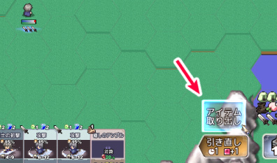
↓
「アイテム取り出し」を選ぶとデッキ内から好きなアイテムカードを1枚選べる。
（画面はデッキ一覧から「ナユタの実」を選択した時のメッセージ）
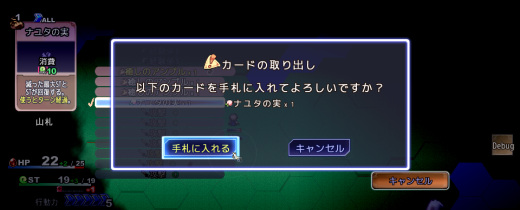
↓
選んだアイテムカードが手札に来る。
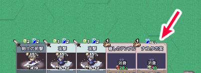
このアビリティがあれば、いざというときに
すぐ「癒しのアンプル」を取り出して使ったり、
スキル「後退移動」が来たときに「エルザイト爆弾」を取り出して一緒に使い、
後退して爆弾投げして目の前に集まっている敵をまとめて吹き飛ばしたりと、
アイテム＋スキルのコンボがかなり組みやすくなります。
武器を使い切ったときにすぐ次の武器を出せるので、それだけでも強力ですね。
【最初は「手札のロック機能」を考えていた】
この「アイテム取り出し」アビリティが生まれるまでには紆余曲折あり、
当初は「手札のロック機能（ロックしていると引き直ししてもカードが手札に残る）」
みたいなのを作ろうと考えていました。
ですが、ロック機能は少しやりかけてみると以下の問題があることが分かりました。
◆「手札を見てロックするためのカードを吟味する」という行為が
『手札が入れ替わるたび』に発生してしまい、
最善手のプレイをしようとすると従来よりめちゃめちゃ面倒くさい！
→ 個人的には、普通の人が遊ぶ『片道勇者1』のように、
「ピンチになってから所持品をチェックする」程度の頻度で
手札を確認するくらいでちょうどいいのでは、と考えていました。
そのためロック機能のせいで毎回手札を確認するコストが発生するのは、
私にとっては望まない方向性だったのです。
アルファ1の「レベルアップ」（経験値カードの管理）でも同じ問題を引き起こしたので、
アルファ2では調整が入っています。
それで「手札のロック機能」よりももっとシンプルかつ開発的にも使い回せる構成で
何かできないかと色々悩んでいたのですが、あるとき、
「毎回手札を見て1枚好きなのをロックして持っておく」のも、
「いつでも1枚好きなのを取り出せる」のも、
「使いたいカードを使いたいときに用意できる」という意味では
実質的にほぼ同じ効果だと気付きました。
結局は「コンボを組みやすくしたい」「危機回避カードをいつでも使えるようにしたい」
というのが重要な願いのはずです。
ついでに手札ロック専用の処理を入れるくらいなら、汎用のボタンで
色んな種類の能力を使える方が遊ぶ人も覚えることが少なくて済みますし、
将来的にも拡張しやすいはずなので、思い切ってここで
「アビリティ」という概念を増やし、元「手札のロック機能」だったものは
そこに放り込むことにしたのです。
「好きなカードを1枚取り出す」機能は「ロック機能」よりも
「狙う」「先読みする」感は減ってしまいますが、
一方で変な特殊操作が増えずに済んだので、
ゲームプレイは割とスッキリしたままにできそうです。
なるべくスッキリさせたままで拡張しようとすると、
いつもこんな感じですごく悩むんですよ。
【「アビリティ」の性質】
「アビリティ」は今のところ、「特徴」で2種類分まで持っていける予定です。
今回ご紹介した「アイテム取り出し」の他にも、
「瞬間引き直し」（ターンを消費せずに引き直せる）、
「どこでもセーブ」などがアビリティとして用意される予定です。
使うとコストの支払いの他に「クールタイム」も発生するので時間を空けねばならず、
連発はできませんが、何が来るか分からない手札と違って確実に使えるので、
プレイスタイルや好みに応じて選んでいただけると思います。
ただ、前作の「荷物整理（所持重量を増やせる）」が
ほぼ必須の特徴だったような勢いで、
好きなアイテムカードを出せる「アイテム取り出し」や「スキル取り出し」的な
アビリティは、今回もかなり有力候補になると思います。
こういう「取り出し」系アビリティがあると
デッキに1枚しか入れないカードも運用しやすいので、
アルファ1の普通の（？）デッキ構築ゲームとはプレイ感が大きく変わることでしょう。
これくらいの間口の広さにできれば、少しは遊びやすくなるのではないかなと思います。
ひとまずプレイヤーさんの「こういう遊び方をしたい！」系の願いは、
前回からある「特徴」補正に加えて、
この「アビリティ」でも補う形でやっていこうと考えています。
たとえば一つの武器を長く使いたい人や武器の使い分けを考えたくない人向けに、
アビリティで「装備の耐久回復」などを作ったり、といった感じに
遊び方のルールをいじれるはずです。
（前回あった、「常に装備耐久力の減少を抑える特徴」で
実現するのもいいのですけれど）
今作は、前作のように特定の「スキル」がいつでも確実に使えないので、
「アビリティ」のような「いつでも確実に使える何か」は
もともと必要だったように思います。
全部の願いは補えないと思いますが、この「アビリティ」の選び方によっては
ゲーム内ルールの一つや二つくらいは破壊できるか緩和できることでしょう。
「狙ってルールを部分的に破壊できる」とゲームの楽しみが増すと思ってるので、
こういうのが用意されてる方が、より私の好みに近いと感じます。
『片道勇者2』の「移動中に任意に行える『操作』の枠」としては、
アルファ1時の「手札使用」や「覚醒使用」、「デッキ管理」に加えて、
この「アビリティ」の追加で、ひとまずの完成にできそうな気がしています。
これら以外のシステムはまだまだ実装できてないんですけどね！
あとはデータや環境をうまく作って判断を面白くしていけるよう、
色々と考えていきたいところ！ うまいこと進めていきたいと思います。
あと、片道勇者ノベル『片道勇者 滅びの闇と繰り返す英雄』が発売されました！
かなり評価は高いっぽいのでもしよければぜひ！
これだけの品質のものはもっと布教していきたい感あるので
応援のご感想・レビューなどもお待ちしてます！

『片道勇者 滅びの闇と繰り返す英雄』
Amazon販売ページへ
[書籍版 ￥1,540 / Kindle版 ￥1,386] ■
2019-06-22 (土) 片道勇者2【38】 オプション画面▼
今週も空いた時間で開発を進めていました。
今週は調子が悪かったのもありますが、
「オプション画面を作る」という一言の作業項目に
ここだけでやたらと時間がかかってしまいました。
【オプション画面を作成！】
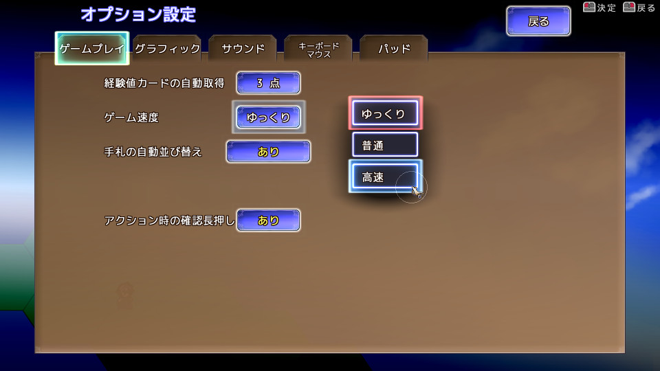
ということで、アルファ1では会話選択肢でごまかしていた
オプション画面の正式版のベースを作成しました！
オプション画面は作ってもすぐゲーム性が拡張されるわけでもなく、
それなのに手間だけは他の画面追加と同じだけかかるので、
開発者視点だと心理的にすごく面倒くさい部分です。
ここまで先延ばしにしてしまっておっくうな気持ちになってましたが、
なんとか動くところまで作れたので一安心です。
他は作っていくほどゲームが広がる内容が多いので、
このオプション画面を今作ってしまえば、
残りのほとんどのシステム作成は
割と楽しみながら作れると思います、たぶん。
あっ、でもメッセージログ画面があった！
これもあまり楽しくない割に面倒くさそうな部分です。
キーボード操作だけなら楽なんですが、マウス操作対応が面倒くさい部分なんですよ。
勢いを付けてがんばっていきたいと思います。
【これからは？】
まだまだ細かい調整やバグ修正はたくさん残っていますが、
徐々に新機能の搭載にも移っています。
ここからは「仲間とどこでも会話できる機能」や、
「1ヘクスに複数キャラを載せる処理」「近くの施設が分かる機能」など、
ゲームが変わる新機能追加もおこなっていく予定です。
あと、別件と副業で創作系の話が裏で進んでいます。
片方はあと数ヶ月ほどで何らかのお知らせができるところまで
来ている感じなので、もう少々お待ちいただければ幸いです。■
2019-06-08 (土) 片道勇者2【37】 プチ改善2▼
今週も空いた時間でいくらかゲーム開発を進めました。
開発日誌でご報告できるネタができるくらいは進められるようになってきました。
●装備を投げるときに押し続け操作を要求
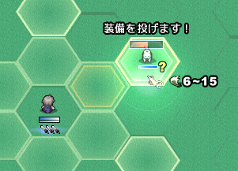
装備の「投げる」を選んで敵をクリックした場合、実行するために
「ちょびっとクリック長押し」を要求するようにしてみました。
慣れてくると面倒くさくなる気がしますが、
慣れない間のいくらかの誤爆防止になると思います。
たぶんオプションで長押し不要に切り替えられるようにします。
敵を選んで消費するアイテムを使う場合は
長押しでいいかもしれませんね。
特に爆弾などは手が滑るとえらいことになりますし。
●手札が種類別に自動並び替えされるように
キーボードの1～0の数字キーやマウスで入力できる都合上、
なるべく左から順に押せる方が理解しやすいので
手札カードの自動並び替え機能を搭載しました。
従来の並び見本
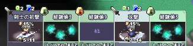
（攻撃したいならショートカットで1、4と入れる必要がある）
↓
最新の自動並び変え機能オン時
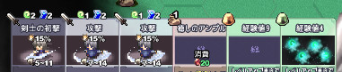
（こちらはショートカットで1、2、3と入れればよくなったので楽）
最初は補助系、次に攻撃系、アイテムや経験値などの消耗品は右の方へ、
といった感じに自動で並び替えられます。
基本は補助を使ってから攻撃するケースが多いはずなので、
1、2、3と入れたり2、3と入れたりするかは分かりませんが
多くの場合は「左から順にキーを押して選べる」ようになるはずです。
これが順番がバラバラで「5、3、4、1」番とかになると、
ムダに認識力を消費してしまうので疲れちゃってよくないですからね。
ちなみに自動で並び変えられると、手札がやや機械的（？）な見え方になるのでは？
などと一時期は雰囲気面での杞憂がありましたが、実際やってみると、
自動で並び替えられていることさえ意外と気付きませんでした。
冷静になると当然ですが、開発で何を取るか迷ったら、
雰囲気よりも何よりもプレイアビリティを先に上げた方が基本的には正解なはずです。
皆さまへの配慮であることはそうなのですが、
なにより私が自然と何百時間にも渡るテストプレイをする際、
遊びにくい部分があると気力が持ちませんからね！
なお、この機能はオプションで解除できます。
●マップのへクスに見た目だけの高低差を付けた
マップのへクスの高さをデコボコにして自然地形っぽさをアップさせました。
これは知り合いの人からご意見をいただいたものです。
ちょっとはマシに見えるかも？
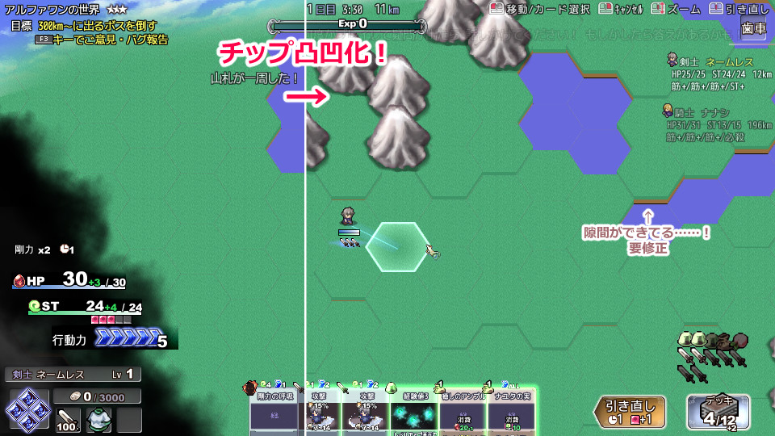
従来は単色塗りのへクスだったためかさほど気にならなかったのですが、
試しにへクスに草の模様を付けてみると平坦なのが人工的すぎて
少し気になってきましたので、その対応です。
「デフォルメされていた部分がそうでなくなると気にならなかった点が気になってくる」
というのは、こういう低レベルな部分にも出てくるのかもしれません。
という感じで、日々いくらかは確実に前進しています。
まだ基本システム中というのが情けない話ではありますけどね！
先は長そうなので、うまいことサブで出せるコンテンツなども作りつつ、
食いつないでいきたいところです。■
2019-05-25 (土) 片道勇者2【36】プチ改善▼【片道勇者2 プチ改善】
今回も相変わらず空いた時間で、大量のバグ修正と共に
予定にあったプチ改善をいくつか行いました。
●装備変更時の性能確認

作るのがいつも地味に大変な、装備変更時の性能確認機能！
今回も簡易版ですが実装してみました。
これから付与などが出てくるとまた調整が大変になるやつです。
●「自動選択」ボタンの実装！ ＆
ホイールで「カード自動選択」できるように。
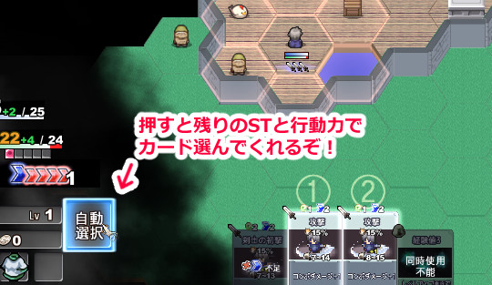
「自動選択」ボタンを新たに追加しました！
この「自動選択」ボタンは、敵を選んだときの自動攻撃と同じような感じで、
手札の攻撃カードをそこそこ最適っぽい順番で自動で選んでくれる機能です。
また、常に縮小しっぱなしのマップ画面の「拡大縮小機能」に
ホイールを割り当てる意味があんまりなかったので、
ホイールのデフォルト操作に「カード自動選択」機能を割り当てました。
↑ホイールで自動選択、↓ホイールで選択解除です。
この「自動選択」ボタン、「敵を選んだときの自動攻撃」と違い、
「手札を1枚だけ先に『手動』で選んで後は『自動選択』する」とか、
「いったん『自動選択』させて後で使用カードを一部だけ選び直す」
といった操作が可能です。
「一部だけ手動で選びたい！」というご意見をいただいていたので、それへの対応です。
1ターンが重いSlay the Spireみたいなゲームであれば
操作が全て手動でいいと思いますが、片道勇者2は1ターンが軽いですから、
こういう配慮でサクサク進められるようにしたいと思います。
●前よりまともかもしれないランダム地名生成機能！
前作では文字をランダムで繋げるだけだったので
ワモイヌポドの世界とかズズィンポボの世界とか
なかなかすごい地名が出るようになってました。
今作では既存の地名から文字の傾向を解析して、
それを元に地名を作るシステムを作ってみることにしました。
と思って作った第一号がひどいことになってたのでここでお見せします。
こんな感じになってしまいました。
↓
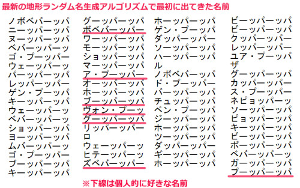
つまり「ボベバーッパー平原」とか「ヴォン・プーッ山脈」とかできるわけですよ！ ひどい！
もちろんこれはバグの結果でした。
これはこれで統一性あるけどさすがにちょっと！
本当はこんな（↓）感じになります。
1のときよりは地名っぽい感じが出ている気がします。

片道勇者2、ようやく修正項目の「底」が遠くに見えてくるあたりまでやってきました。
残りを見るのがイヤになる状況からは脱しただけでまだ道のりは遠いです。
整理した項目を8割9割ほどいじったらこっそりアルファ2をお出しして、
そこから本格的に製品版に向けて本格的なシナリオやデータの実装を
していく感じになると思います。
Copyright © SmokingWOLF / Silver Second
 カテゴリ: 片道勇者2
カテゴリ: 片道勇者2 カテゴリ: 片道勇者2
カテゴリ: 片道勇者2